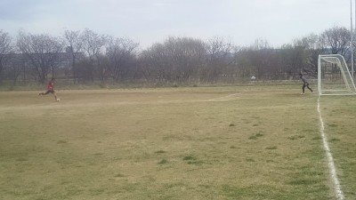

いつもなら活動日にカキコするんだけど、昨日は何か疲れたんでと、いつもの時間帯が慣れているので昨日の活動報告しまーす。
昨日は土曜日にかかわらず、遅刻早退合わせて最大で１７名くらい来たんかな？その分、今日が少なくて中止になって今日だけの参加の方は申し訳なかったです。
昨日はSPARKさんのお誘いでミンツェさんと巴戦をしました。お相手頂いてありがとうございました。
２０分を４本しました。結果的に僕は見学でしたがいいお天気で楽しそうだったなあ。（涙）
まあ、いつも通り得点シーンとか中心にカキコしたいと思います。
１本目はミンツェさんとでした、結構若くてがたいのいい人が多かったですね。後半とはメンバーが違ったのか、個人技とかあまり無くて裏への縦パスがメインで、うちのほうが押したイメージがあります。
たっちゃんがトラップして振り向きながらのファーストシュートから始まり、タカさんのクロスからたっちゃんがキープしてシュートもええかんじでしたし、タクちゃんもドリからシュートしてました。
バックもゆっきーがラインを高めにコントロールしてくれてまっとん、なかやんも頑張って守ってましたね。
でもほんま相手は右サイドばっかの攻撃でうちの右サイドバックだったなかやんはボールに触ってないんじゃないかって思ってました（笑）。
タカさんがサイドの上りがいい感じで、たっちゃんが中央でキープしてサイドへスルーパス、タカさんが走りこんでシュートが惜しかったですね。いつもなら大レクとが多いけど、歩幅が合わんかったみたいで残念でした。
あと、わだっちからスルーパスでたっちゃん、タクちゃんへと繋がったいいプレーもありました。
試合最後にはたっちゃんが左サイドへパスしてタクちゃんが受けてそのあと、中央に強めのクロス、走りこんできたトクさんが届かずで惜しかったですね。
この試合は双方無得点でした。
２本目はSPARKさんとでした。ちなみに２本目と３本目はまた隠し撮りしてるけど、今回は結構いいシーン、悪いシーンでボールを追いきれてなかったなあ。僕の小さなガラホ画面の中でボールを追っているからまぶしいとかで見え無くなるんだよねえ、あと片手でメモ取りながら撮影しているから、まあ許してちょ。ってそもそも僕が謝る必要はないんだよなあ（笑）
２本目は試合早々、タクちゃんのシュートが右ポストに当たったのが始まりでした。ヤスさんが「一点もったいなかった」って毒はいてた（笑）
たっちゃんのキープからのこぼれ球を走りこんできたわだっちがシュートしたりとかありましたね。
オフサイドになったけど、トシキの縦へのいい飛び出しや、展開からオカちゃんがヘッドで落としてたっちゃんが受けたり、ぶっちが左サイドで躍動してて、たくちゃんへの縦パスもオフサイドになったけど、受けたタクちゃんがループボレーでゴール枠に入れたりとかあったなあ。
１点目はまあ相手のミスからでしたが、決めたのは流石。オカちゃんのコーナーキックはキーパーへ一直線。キーパーがお腹でキャッチしようとしたらタイミング間違えて跳ね返ったところに居たタクちゃんがそのまま強烈なボレーシュートをかましてネットに突き刺しました。
２点目も同じ感じかなあ。相手キーパーのゴールキックがミスキックになってコロコロと飛んで行って、そこに居たたっちゃんがそれを奪ってドリブル、キーパーと１対１で見事に決めてくれました。
もう１得点ありました。これはいい感じでしたね。中央でたっちゃんが敵に囲まれながらもボールを引いて２度ほど交わして、そのまま縦にやさしいスルーパス、それを受けたタクちゃんがそのままゴールを決めました。
でもでも２本目の一番の見どころは、思いっきりハンドっぽいのにしれっとそのままプレーしてた悪徳ごろうかな、画像に証拠写真あるぞ（笑）
３本目はミンツェさんとの後半、前半と違ってかメンバーも変わってかなり個人技とスピードとあとはガツガツと来られてボコられましたね。ファールで後ろからつかまれて止められたまえちゃんの怒りMAXモードにハラハラしてた（笑）
まっとんがワントップでしてたけど、結構いい動きしてましてね。後はもっと競ったり、裏だけでなく横とかスペースに動いてボールを貰う動きが出来ればいいと思います。来週からタクちゃんに鍛えてもらってください（笑）
３本目は個人技とかにやられたなあ。一度目はまんちゃんが１対１の場面でナイスキーパーしたんだけど。左サイドから攻められた時は一度は防いだんだけど、こぼれ球を押し込まれて１点取られて。２点目も左側からループみたいなのを決められて、３本目は３人抜きみたいなのを食らってそのままゴール決められてボコラレリータになりました。
４本目はスパークさんとの後半戦。左サイドバックに「特攻の拓」が登場。トシキと左サイドコンビがいい感じでしたね。
トシキからのサイドのクロスに飛び込んできたまえちゃんとイメージが違ってたのがもったいなかったなあ。
タクちゃんがコーナーでまさかのゴロでそのままゴールラインを割ったんだけど、誰かがまた「ボールのせいや」って言ってた気が・・・、持ち主が一番蹴ってないありがたいボールなんだぞう（涙）
相手バックが疲れていたのもあって、うちがほぼ攻めてましたね。１点目はまえちゃんからのスルーパスをタクちゃんが受けて左サイドを駆け上がってそのままドリしてシュート。たっちゃんが「どんなサイドバックなん」ってツッコミ入れてた（笑）、ライマンはオフサイドの旗上げてたけどね（笑）
むらっちが超ループ大陸弾道ミサイルロングシュートを打ってましたね。
２点目はそのむらっち？？？が起点になってタクちゃんからトシキに渡ってシュートを決めてくれました。
３点目はたっちゃんがドリブルで囲まれながらもキープして、その横を後ろから走りこんできたトシキにパス、トシキがそれを受けて強烈なサブマリンシュートを打ったけどキーパーが足で何とか止めて跳ね返ったところを反対側から上がってきてたむらっちが押し込んでのゴールでした。むらっちは右のアウトサイドでの強烈なシュートも惜しかったですね。
４点目はあんまりわからん、どっかからのスルーパスをたっちゃんが受けてゴールでした。
最後にもったいないのがありました。たっちゃんがドリで縦に切りこんでアンダークロス、それを中央に走りこんできたかねやんがゴールの１Mくらい前でドンピシャで合わせてまさかのホームラン。まあ、僕も昔あったし、力んでしまうのもあるしね。何よりあっこまで走ってのが凄いですね。チーム最年長ゴール記録は股の機会に楽しみにしていますね。
最近はタクちゃんやトシキ、たっちゃん、テラさんとか３０代前半から中盤が主に得点を決めてくれてます。それは嬉しいんだけど、僕も含めて４０代以上も決めれるように頑張りましょう。ただ僕もだけど４０代以上で得点取る感じのスタイルのメンバーあんまり居ないんだよなあ。僕はまず怪我治してからだけど、点取るよりクロスとかしちゃうだろうなあ。
まあ、そんな感じの一日でした。参加された皆さん、お疲れ様でした。
画像は悪徳金融屋とその子分です（笑）
昨日参加された皆さんお疲れ様でした。
暑くなりそうな天気予報だったので、薄着で行ってみたら結構肌寒く動いていれば丁度良い感じでしたね。
本日は参加人数が多いので紅白戦ということで週末に向けて気合入れていたんですよ今週は。
しかし、仕事が忙しく疲れていたのと、土曜日に親知らずの歯を抜いた痛さで腑抜け野郎になってしまい
低調なパフォーマンスでしたやはり。
そんな中ゲームの合間にシュート打ってくれた岡ちゃんありがとう。変化するシュートのキャッチ練習が唯一の収穫です。
ケガしなかっただけ良かったと思います。まっさんには悪いけど(笑)
まっさんえらい落ち込んでた様子でしたが、痛めていたところが再発したわけではないので無理をせずしっかりケアすればすぐ良くなりますよ。先週今週とよく走れていたじゃないですか。これから暖かくなるしね。
ということで次戦は無理せず枚方スタジアムまで我慢してください。
でも確か枚方スタジアムは硬くて滑りやすかったと思いますので、その次くらいで(笑)
それとチームのグローブ持って帰るの忘れてました。
来週持って帰って洗いますのでそのままにしておいてください。
間違っても他の洗濯物と一緒に洗濯機にかけて天日干しなんて絶対しないでよ。
グローブは僕と一緒でデリケートな物なので。

悲しいとき～、悲しいとき～「怪我が良くなりそうだと思ってたら、違う場所を痛めたとき～」※リピート BY いつもここから
ていうかほんまなんなんだろって情けなくなりました。ポンコツだなあ（涙）
今日は僕を入れて２１名かなって思ってたらスケさんが来てくれて２２名になって紅白戦で１１対１１ええ感じやなあって思ってたらね。
朝８時くらいに来て柔軟とかストレッチとかUPもそこそこしたんだけど２本目の終盤くらいに右足首少し上くらいに違和感が、んで足を圧迫して３本目に挑んだけど途中で「ピキ」ってなって初めての場所を軽度の肉離れになった感じ（涙）。
歩くのにちょっと突っ張る感じで痛みは無いけどなんだかなあ。とりあえず、明日に鍼してもらって来週に間に合うかなあ（悲）
んで途中からはポンコツのせいで１０対１１の紅白戦になりました。
どんなプレーしてたかあんまり覚えてないわ、タクちゃん、トシキ、たっちゃん、ほっしゃんとかが躍動してた？たっちゃん解説頼むわ。何か最後コーナーから決めてたっけ？
オカちゃんが右サイドから３回くらい縦にドリで抜こうとして見事に取られてたのは覚えてた。まんちゃんとのシュート練習ではめちゃいいボール蹴ってたなあ。
後は最後のトンボでなかやんがいじられてたのは覚えているかな（笑）
まあ、今日参加された方、大人数で紅白戦ってあんまりないので良かったら感想を積極的にカキコしてもらえたら助かります。僕は無いっす（涙）、むらっちは靴ずれ大丈夫やったかな？
まあ、怪我したから恒例の隠し撮りあるんで、良かったらみてちょ。ゆっきー、いつドローンから空撮すんねん？
まあ、とりあえず参加された皆さん、お疲れでしたー。
3月11日に正式加入してからの初参加させて頂きました筒井和哉（カズ）です。投稿遅くなりすみません。
逸見くんから紹介して頂いて今回の加入となりました。
いつも元気な逸見くんとは小中高とずっと一緒のチームメイトで、キャプテン、副キャプテンの関係性でもあり基礎練習は常にパートナーでした。成人式に会ったのを最後になかなか会える機会がなく一昨年に奇跡の再会を果たしてからよくお酒を飲みに行くようになりました。お酒を飲みながら昔話しばかりしていて、「また一緒にサッカーしたいな。」なんて話をしたときにエガリテFCを紹介してもらって11月に体験参加をしてから、かれこれ4ヶ月経ちますが、なんとか正式加入させて頂いてすごく嬉しいです。本当に皆さん優しくて、よく声を掛けて下さって人見知りの僕はすごく助かってます。打ち解けるのに時間がかかるタイプの人間ですが、これからもよろしくお願いします。
月の半分ぐらいは日曜日も仕事なので、そこまで多く参加することは出来ませんが、皆さんとサッカーを楽しみたいです。
東日本大震災から７年、早いような遅いような・・震災から３年後かな？現地に行ったけど復興はまだまだですね。メンバーの中にも関係する人が居るかもしれません、微少かもですが力になってあげてくださいね。
んで、今日はゴイゴイスーないいお天気とゴイゴイスーな大勢のメンバーの参加がありました。淀川ふれあいマラソンの影響があるかなと思ってましたがだいじょぶだいじょぶでした。
今日は遅刻早退合わせて２２名と紅白戦がほんと出来るメンバーの参加がありました。昨晩にどこかグランド空いないかなって探したけど無くていつもの場所だとちょっと広さ的にしんどいし、ギリギリだと車の通りとか気にしないと駄目だったりで駐車場の奥から小さな橋を渡って歩いて行く広場の方でしました。
早退組も居たので、１０分くらい鳥かごでアップ（僕は別メニューでしたが）して、それからいつも通りミニゲをしました。あの場所で取れる限界の大きさでしましたが、１１対１１だとちょっと多かったかな？それでもまあまあパスとか通っていた感じがします。反対に最後の方は８対８になったらめちゃしんどかった。
正式入部後の初参加だったカズ、どうでしたか？また感想をお待ちしています（書かないとトシキに罰ゲームがあるよ（笑））
まあ、今日はなかやんのチーム分けの嘘こいた（最後にハマさんもやけど）から始まって、まあ楽しくいつも通りに出来てましたね。結構ぬかるんでたので滑ったりが多かったですね。
特にタクちゃんに対してはみんな奪いに行くのが多かったかな？それでも決めたりするからさすがっすね。
後はゆっきーの挙動不審な言動とかなかやん、まっとんのいつものコントとかいろいろあったなあ。
僕は足の怪我はまだ様子見だったけど先週よりかは動けたかな？左足を気にして、いつも以上に右足がノーコンだったし、何よりずっと休んでいたから体力が無い、最後の方は動けんかった。特にタクちゃん追い掛けて行ったのが決定的に足に負担掛かったわあ（涙）、あのエイトマンなんとかカチコーンってやっつけたいなあ（笑）
まあ、怪我もなくみんな楽しく過ごせたのではないかなって思います。
来週はグランドなので今日くらいの参加があればいいなあ。その次の週の試合やGW中の試合の予定について人数が少ないですので、参加出来そうな方は早めに登録をお願いします。
本日参加された皆さんお疲れ様でした。
寛平マラソン忘れてたー。車で来ないでってホームページには書いてあるけど、そんなの関係ねーで問答無用に車が朝の時点でいっぱいで駐車場に行くことも出来ずに警察官に何度も×とかグダグダ言われた過去をお思い出したわ。
一昨年、去年はきちんと覚えていて、その日は違うグランド確保したりしたんだけど、ほんと今年は抜けてた。気づいて連絡くれたもりちゃんありがとうね。んで、すぐにグランド空き状況も確認したけどどこもいっぱいで、時間に追われてたからまあまあの広場があるのが鳥飼上のグランド周辺しか思いつかなかったので、急遽の変更メールさせてもらいましたが、メールに気づかずとかで現地に行かれた人も居てほんと申し訳ないっす。
でもまあ、十分な広さで活動が出来て今後何らかのイベントとかでいつもの場所が使えない場合は鳥飼上に変更できるってわかったので良かったです。
今日は早退を入れて１４名の参加がありました。最初からミニゲでしたが、僕は１本目はお休みで柔軟とかランニングとかしてました。去年の最後だったかな？同じ鳥飼上でランニングしただけで左足がぶちっていったのがあったので、今日も怖かったですがアップの時点では大丈夫でホットしました。
２本目から参加して抑えながらしてましたが、まあまあ走れたり、ドリブルで切り返しとかもしても痛みとかなかったので一安心。まだ今日はトレシューで全力の６割程度だったけど久々にボール蹴れて楽しかったし、嬉しかったですね。
もう今日にまたプチってなったら引退もまじ考えないとと思ってたんでホットしました。まだ油断禁物で試しながら頑張れたらいいなあ。ただ、別問題が・・・しばらく運動してなかったのでまじ体力無くなった（涙）
今日は内容的にはいつも通りいろんなおもろいプレーや、いいプレーもありました。タクちゃんのドリをみんなが必死に止めに行ったり、トクさんが縦横無尽に走ったり、まんちゃんがドリブラーしてたり、まっとんとなかやんのコンビプレーがいい感じだったり、その２人をいつも通りまえちゃんがいじったり、むらっちが絶叫してたり、タクちゃんが芸術的なループ決めたりとかあとはもりちゃんとまえちゃんのやり合いがいつも通りおもろかったり、もりちゃんにボールを延々と持たしてカラータイマーが鳴るのを待ってたりとかほんと一緒にコートの中でボール蹴りながらサッカーの楽しさを痛感してました。
個人的にはぶっちへのふわっとしたクロスでそれをぶっちがヘディングで決めてくれたり、タクちゃんとのワンツーでランニングしながらヒールでパスしてそれをタクちゃんが受けて決めてくれたのが良かったかなあ。
今日だけじゃわからないけど、来週以降も様子見ながら徐々に全力で出来るようになれたらいいなあ。
本日参加された皆さん、お疲れ様でした。
先日は、お疲れ様でした。
シュート外してしまい、得点できなかったのは残念ですが。皆さんが試合を楽しみ、結果的には勝てたので、それだけで自分は十分です。
ですが、シュートを外した戒めとして、体のどこかに入れ墨を入れます。
今後、試合にかかわらず、練習でもシュートを外したときは入れ墨をいれ、自分のミスを体に刻みたいと思います。
話は変わりますが、そろそろ暖かくなってきたので、バーベキューしましょう。
提案という役割は果たしたので、日時・場所等は平等に役割分担して決めてください。
よろしくお願いします。
先日の試合、お疲れ様でした。
河村ドリームズの皆様、交代人数少ない中、助っ人借りずに最後まで本当にお疲れ様でした。
今回は見せ場の多い試合でしたね！得点シーンが多すぎて全部覚えきれてなかったのですが、何とか、まっさんのエンジェル活動報告のおかげでアシスト、得点等の記録ができました。今回エガリテに入って２回目ですかね？超久々、ＣＢ行かせてもらったんですけど、マジで動きがわかんなかったです（汗）インターセプトのタイミングとか、ミスしたときのリスクとか。前線では感じられない緊張感があって楽しかったです。これからもバックの動きはちょっとずつ覚えて行きますのでご教授、宜しくお願いします。
たっちゃん、デビュー戦での初ゴールおめでとう！きっと体力は徐々に上がっていくよ！おかちゃんもようやく得点できて何よりです。
最後の試合での失点は一瞬の隙をつかれました。自分もその時、ボランチやってたので、もう少し下がっていれば良かったです。それでも全体通して振り返ってみると、守備がかなり安定感ありましたよね。無理に前へ蹴らずに、バックで回してサイドチェンジとか何本かあったので、めっちゃ攻めやすかったです。
まっさんのボールのせいにしているのは、自分の力量不足です。あのボールに早く慣れるように頑張ります。
それか、そのボール・・・無くしたりしませんかね？（笑）
egaliteのメンバーの皆様、egaliteのサポーターの皆様２５日 日曜日はお疲れさまでした。
また、対戦相手の方々にも感謝いたします。
２０１８年の年が明け１発目の対外試合に参加！２０１７年の忘年会に発表した今年の目標！
浜さんとのWボランチでチームに貢献！でしたが浜さん不在・・・
よって、ワダッチとの初Wボランチ！久々に緊張しました・・・マジで！
緊張のあまりミス連発・・・ヤバス！
しかし、チームの皆様方に助けられながら楽しい時間を過ごすことができました。
有難うございました！
個人的には、まっさんの最終試合にビデオ撮ります！の声に体が反応
最高のプレーをしてビデオに映ろうと思っていましたが・・・（涙）
しかし！最後まで諦めない気持ちが！
一瞬でしたが映れました！最高の思い出が出来ました。マッサンありがとうございます。
何だかんだ言って最高の時間を過ごすことができました。
楽しい時間はいつまで続くのでしょうか・・・
明日２月２８日は私の会社の移動の告知が行われるXデーです。
１週間ぐらい告知が続きますが・・・（汗）
個人的には１試合目の左サイドでディフェンスをしてた時ぐらいドキドキしています
引き続き、egaliteでプレーできる事を祈りながら明日から１週間生活致します。
それでは、4月からもegaliteでプレーできる姿を頭の中で描きながら
ワイン片手に願っています。
昨日の試合皆さんお疲れ様でした。ご一緒していただきました、チーム河村さんありがとうございました。
昨日の試合はegaliteに加入後、初めての試合でした。１５年ぶりのサッカーコートでの試合はメチャクチャ楽しかったです。フットサルになれすぎて視野が狭くなっているので早くサッカーの感覚を取り戻すよう頑張ります。
昨日の試合では１試合目の先発メンバーにいれていただきましたが、試合前にたくちゃんとトシキに「未だにデビュー戦でゴールはないですよ」とプレッシャーをかけられました(笑)実際の試合ではトシキからのいいパスに恵まれて蹴りこむだけの得点でしたが無事得点することができました♪
個人的には体力が無さ過ぎて守備時にチームに迷惑をかけすぎ過ぎました。egaliteの堅い守備陣に感謝です！今年は体力作りを頑張ります。